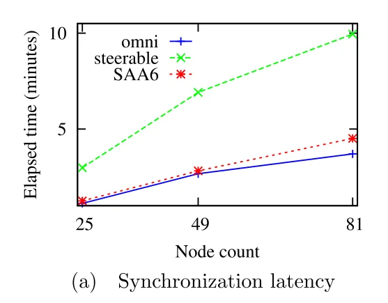

Dense IoT networks drop packets to in-network interference. Steerable antennas focus energy where it is needed, but 6TiSCH assumes omni-directional radios. SAA6 (Steerable Antenna Agnostic 6TiSCH Solution) adds the missing MAC and scheduling pieces.
Shared-cell collisions−20%+vs omni-directional
Packet deliveryup to +30%PDR, 81-node network
Energyup to −20%fewer retransmissions
Formation cells≈ −25%fewer hops to the root
Direction learning
RSSI of ordinary control frames tells each node where every neighbour is: no probing.
Broadcast without omni
Control frames are copied as unicast into autonomously scheduled cells.
Space as a resource
Antenna direction becomes a third scheduling dimension next to time and channel.
1 · Introduction
Why Steerable Antennas in Industrial IoT?
Multi-hop IoT meshes deliver data to a sink; simultaneous transmissions cause in-network interference, worst in dense networks.
IEEE 802.15.4 shares the band with Wi-Fi; external interference lowers reliability further.
ESPAR antennas (one active element, passive elements on variable reactances) steer the beam electronically: 30°–60° steps, 7.5–9 dBi.
A directional node must know when, on which channel and in which direction to listen. Broadcast control frames (EB, DIO, DIS) assume everyone hears them, which a narrow beam cannot guarantee.
Contributions: (1) autonomous, antenna-aware scheduling for faster neighbour discovery; (2) RSSI-based transmit-direction finding to suppress interference; (3) directional communication in shared cells to cut collisions and improve scalability.
2 · Background
6TiSCH in a Nutshell
Join
The root broadcasts Enhanced Beacons (EB); a node that hears one synchronizes and learns the minimal schedule, then RPL DIO frames build a tree (DODAG) toward the root.
Slotframe
Time is cut into slots that repeat as a slotframe; each cell is a (time slot, channel offset) pair: transmit, listen or sleep.
Shared cells
Slotted-ALOHA contention, used for EB, DIO and the first 6P negotiations: the bottleneck during formation.
Dedicated cells
Negotiated between a pair with 6P under a scheduling function (SF0 / MSF): collision- and interference-free.
Autonomous schedulers such as Orchestra and ALICE derive cells from node IDs; SAA6 reuses that idea for control traffic between neighbour pairs.
3 · Steerable Antenna Model · Eqs. (1)–(2), Fig. 1
PTX = 0 dBm, PPL = −52 dB at d0 = 1 m, K = 2.5, sensitivity −95 dBm (CC2420). Blue: omni range; orange: steered range. Peak gain 5 dB adds ~30 m at boresight and costs ~40 m behind.
4 · Improving Network Formation · Algorithms 1–2
Learning Where the Neighbours Are
Steering step
A neighbour table keeps, per MAC ID, the best direction and its highest RSSI, updated on every received frame (EB, RPL, data): no probing frames.
During discovery, antennas point a random direction each slotframe.
Tx cells steer to the stored best direction; Rx cells listen there ±15° to keep exploring; shared cells use a random direction. Up to 8 neighbours per node.
Illustration of Fig. 3: four node pairs 40 m apart with random directions each slotframe, using the paper's link model. The paper's pairs converge to about −82 dBm.
4 · Improving Network Formation · Section IV-B
Why Shared Cells Get Hard
A successful directional link needs three things: X points at Y, Y listens toward X, and nobody else transmits toward Y on that channel. During discovery both sides guess directions.
Tx beam α
Rx beam β
Neighbours n
Adding 2π/α · 2π/β shared cells, one per direction pair, would waste bandwidth and energy. SAA6 instead sends broadcasts as unicast copies over cells dedicated to each known neighbour.
slotTX(n) = hash(IDn, IDo) mod Lauto, slotRX(n) = hash(IDo, IDn) mod Lauto, ch(n) = hash(IDo, IDn) mod Lhop
Slotframe Lauto
Fig. 4 topology (1–2, 2–3, 2–4), 4 channels, illustrative hash. Data uses a separate SF0 slotframe; the two lengths are co-prime (51 and 397 in the tests) and autonomous cells win when they overlap.
Fig. 5: fewer hops to the root with steerable antennas
C = ⌈Dt·Ls / It⌉ Ca = 2 Nn Ls / La
Tx interval It
Dt = 15 ms, Ls = 51. Per unit C, Table 1 gives 296 cells (omni) vs 240 (steerable, ~25% fewer thanks to fewer hops) plus a fixed 80 autonomous cells: +8% at 1 s, −6% at 0.5 s.
5 · Performance Evaluation · Table 2
Evaluation Setup in Contiki / COOJA
COOJA was extended with steerable antennas and the deterministic path-loss model of Eq. (2). Three scenarios:
Omni: standard 6TiSCH with omni-directional antennas.
Steerable: steerable antennas, broadcasts in a random direction.
SAA6: steerable antennas, broadcasts as unicast copies in autonomous cells toward the best direction.
Static nodes, 0 dBm, half-duplex; the root has three switchable 120° antennas that can emulate omni.
Slotframe / autonomous
51 / 397
Timeslot
15 ms
Shared cells omni / steerable
3 / 1
Tx range omni / interference
50 / 100 m
Tx range steerable
15–80 m
EB period
16–50 s
DIO interval
4.096–1048.576 s
Inter-node distance
40 m
Area / duration
320 × 320 m / 2 h
5 · Performance Evaluation · Fig. 6
Results for the 81-Node Network

6 · Discussion
Discussion and Limitations
Space is a schedulable resource
Direction lets more links share a time slot and channel, which shows up as higher PDR when channels are scarce.
Discovery is the price
Narrow beams slow synchronization; autonomous cells recover most of it at a fixed extra cost that pays off under heavy traffic.
Unbounded search
Random directions give no upper bound on discovery time; faster EB/RPL frames would help but cost energy.
Simulation only
Results come from COOJA with a deterministic path-loss model; real hardware and fading are future work.
7 · Conclusion
Conclusion and Future Work
6TiSCH can support steerable smart antennas with modest MAC and scheduling extensions (SAA6).
RSSI-based direction learning, directional shared cells and autonomous control cells make it work without probing or negotiation.
SAA6 beats the omni-directional stack in reliability and throughput, especially in dense networks: fewer collisions, higher PDR, lower energy.
Next steps
Validation on real hardware under real conditions
Machine learning for choosing the best direction
Multi-path communication with steerable antennas to cut latency
7 · Conclusion
Check Questions
With the paper's link model, why is the steered range about 83 m at boresight but only about 13 m behind the antenna?
How does a node learn a neighbour's direction without sending probe frames?
Why are broadcast frames a problem for directional antennas, and how does SAA6 handle them?
Why do both neighbours agree on the same autonomous cell without negotiating?
Why does SAA6 need more cells at a 1 s interval but fewer at 0.5 s?
Show answers
G = +5 dB at θ = 0 and −15 dB at 180°; with K = 2.5 the range is 10^((0 − 52 + G + 95)/25): about 83 m vs 13 m (omni: about 52 m).
From the RSSI of frames it already receives (EB, RPL, data): it keeps the direction with the highest RSSI per neighbour.
A narrow beam reaches only some neighbours. SAA6 copies the frame as unicast to each neighbour in cells dedicated to that pair, steered to its best direction.
Both compute the same hash of the two node IDs: the sender's Tx cell equals the receiver's Rx cell.
The 80 autonomous cells are fixed, while the hop savings scale with traffic (C): at 1 s, 240 + 80 > 296; at 0.5 s, 480 + 80 < 592.
References
Selected References
X. Vilajosana et al., "IETF 6TiSCH: A tutorial," IEEE Commun. Surveys Tuts., vol. 22, no. 1, pp. 595–615, 2020.
M. Burtowy, M. Rzymowski, L. Kulas, "Low-profile ESPAR antenna for RSS-based DoA estimation in IoT applications," IEEE Access, vol. 7, pp. 17403–17411, 2019.
T. Voigt, L. Mottola, K. Hewage, "Understanding link dynamics in wireless sensor networks with dynamically steerable directional antennas," EWSN, 2013.
S. Duquennoy et al., "Orchestra: Robust mesh networks through autonomously scheduled TSCH," ACM SenSys, 2015.
S. Kim, H.-S. Kim, C. Kim, "ALICE: Autonomous link-based cell scheduling for TSCH," IPSN, 2019.
Supported by TÜBİTAK, grant 118E289. Figures are reproduced from the article (CC BY 4.0); Fig. 6 is split into panels.
Thank You
Integration of Steerable Smart Antennas to IETF 6TiSCH Protocol for High Reliability Wireless IoT Networks
How to cite: Külcü, S., Görmüş, S., & Jin, Y. (2021). Integration of Steerable Smart Antennas to IETF 6TiSCH Protocol for High Reliability Wireless IoT Networks. IEEE Access, 9, 147780–147790. doi:10.1109/ACCESS.2021.3125144